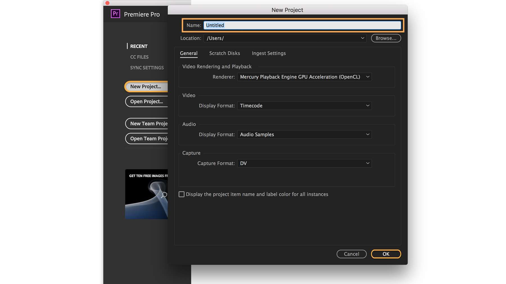
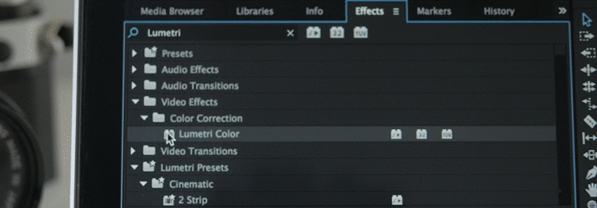
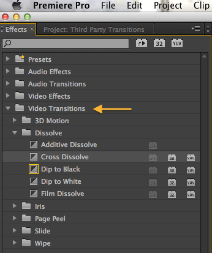

.jpg)
.jpg)
.jpg)
.jpg)
.jpg)
.jpg)
.jpg)
.jpg)
.jpg)
ABOUT......
Adobe Premiere Pro
Video Editing Software Application
Adobe Premiere Pro is a timeline-based video editing software application developed by Adobe Systems and published as part of the Adobe Creative Cloud licensing program.
First launched in 2003, Adobe Premiere Pro is a successor of Adobe Premiere.
It is geared towards professional video editing, while its sibling, Adobe Premiere Elements, targets the consumer market.
 |
..........SYSTEM REQUIRENMENTS FOR Premiere Pro .......... |
Starting a new project in premire
|  | How to start a new project.. Open a Premiere Pro project file by double-clicking it, or click Open Project in the Start screen and select a file.
To create a new project file, click New Project in the Start screen. Choose a name, browse to choose a location for the project file, and click OK. |
Panels and workspaces
Panels: Each panel has a specific purpose. You can resize or reposition them. All panels are accessible in the Window menu.
Workspaces: Preset layouts with panels displayed that are useful for particular tasks, such as editing video or working on audio. To reset a workspace, choose Window
> Workspace > Reset to Saved Layout.
Blue highlight: Only one panel at a time will have a blue highlight, indicating that it is the active panel.
Import media
Use the Media Browser panel to locate and import your media files. To preview a video in the Source Monitor, double-click it. To import media files, select them and right-click on them to choose Import.
Bins allow you to organize your clips in the same way that you might organize files in folders on your computer. To create a new bin, click the New Bin button in the Project panel.
Build a sequence
When you create a sequence, it appears in the Project panel along with your clips. You can create as many sequences as you want in the same project.
To create a new sequence, drag one or more clips into the empty Timeline panel, or select one or more clips in the Project panel, right-click on the selection and choose New Sequence from Clip.
Add more clips by dragging them into the Timeline panel.
To remove a clip from the sequence, select it and press Backspace (Windows) or Delete (macOS). If you select clips and press Shift+Delete (Windows) or Shift+fn+Delete (macOS), they will be removed without leaving a gap in the sequence.
Color Grading Fundamentals in Adobe Premiere Pro
 |
When Is Color Grading Necessary? If your video looks a little flat, if you filmed on different cameras, or if you're recording LOG footage, you'll probably need to color grade your footage. Note: LOG footage is desaturated, low-contrast footage that many professional cameras shoot. It is designed to retain the most information in the footage (without losing highlights that are blown out or shadows that are too dark). It is the best way to shoot footage, but it is an intermediary, and needs to be color graded into a final image before it is ready for viewing. Usually, color grading is the last step after editing your video down to a final cut. All your other edits should be locked before you get to this stage. Otherwise, you’ll waste a lot of time redoing your tweaks to colors. Depending on the process you use, that could be a lot of time! |
How to Color Grade in Adobe Premiere
Adobe Premiere is best if your color grading needs are minimal. For instance, it can handle tweaks to exposure and color temperature very well.
|
APPLYING LUMETRI AS AN EFFECT Lumetri is a tool built into Adobe, and can be applied as an effect to the clips you’re editing in the timeline from the Effects list. If you access it in that manner, you’ll use the Effect Controls menu to make changes. |
 |
ACCESSING THE COLOR GRADING WORKSPACE IN PREMIERE
Alternatively, you can navigate to Lumetri within Premiere by selecting the Color tab at the top of the screen to bring up the color grading workspace. Premiere will automatically select the clip under the playhead, and the Lumetri corrections will open on the right hand side of the screen. Then, you’ll want to make sure the Lumetri scopes are also visible on the left. The waveform scope appears automatically (more on exactly what that is below), but if you right click it, you can open other options as well.
Premire Pro shortcut keys

Getting Started with Video Transitions and Effects in Premiere Pro
|  |
Video transitions Generally, an editor will use a simple cut to move from one shot to another — the most basic and common type of transition. In some instances, you can smooth out or stylize your edit by applying transition effects in between clips, at the beginning, or at the end of a clip. Transition effects can also be used as a storytelling device. There are a variety of transitions available in Premiere Pro. In the Project window, choose the “Effects” tab and open the “Video Transitions” folder. Here, you can find anything from basic dissolves to wipes, slides, and zooms |
Applying a dissolve transition
The most commonly used transition is a dissolve, in which two clips overlap each other, with one shot gradually replacing the previous one. Let’s look at the different ways we can apply a cross-dissolve transition onto our clips on the timeline. (This applies to all other transitions, as well.)
1. Under “Dissolve” in “Video Transitions,” drag the “Cross Dissolve” transition in between two clips on your timeline.
2. The Cross Dissolve is your default video transition (note the blue box around the icon). This means you can right-click in between two clips and apply the transition by choosing “Apply Default Transitions” (CMD+D / CTRL+D). Even better, you can highlight edit points (using shift) and apply the transition to multiple clips
3. If you have multiple clips on your timeline that need transitions, you can also select the clips and choose “Sequence > Apply Default Transitions to Selection” (SHIFT+D).
Exporting video and audio files
1.Do one of the following:
...In a Timeline panel or Program Monitor, select a sequence.
...In a Project panel, Source Monitor, or bin, select a clip.
2.Do one of the following:
...Choose File > Export > Media. Premiere Pro opens the Export Media dialog box.
...Choose File > Export. Then select one of the options other than Media from the menu.
3.(Optional) In the Export Settings dialog box, specify the Source Range of the sequence or clip you want to export. Drag the handles on the work area bar. Then click the Set In Point button and Set Out Point button .
4.To crop the image, specify cropping options in the Source panel.
5.Select the file format you want for your exported file.
6.(Optional) Select a preset best suited for your target means of playback, distribution, and audience. Premiere Pro has presets for Twitter, Facebook, Vimeo, and YouTube. Click the Publish tab.
Note:
To automatically export a file from a Premiere Pro sequence with settings that exactly match the settings for that sequence, select Match Sequence Settings in the Export Settings dialog box.
7.To customize the export options, click a tab (for example, Video, Audio) and specify the appropriate options.
8.Do one of the following:
...Click Queue. Adobe Media Encoder opens with the encoding job added to its queue.
...Click Export. Adobe Media Encoder renders and exports the item immediately.
Designed_by Vimukthi Kulasekara |
|